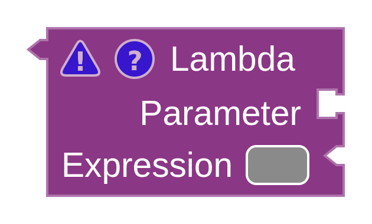
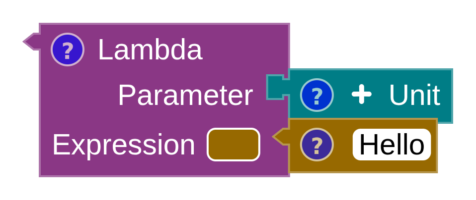
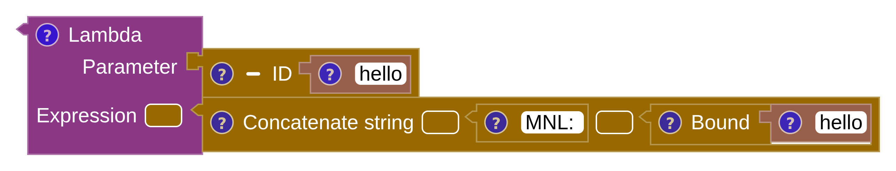
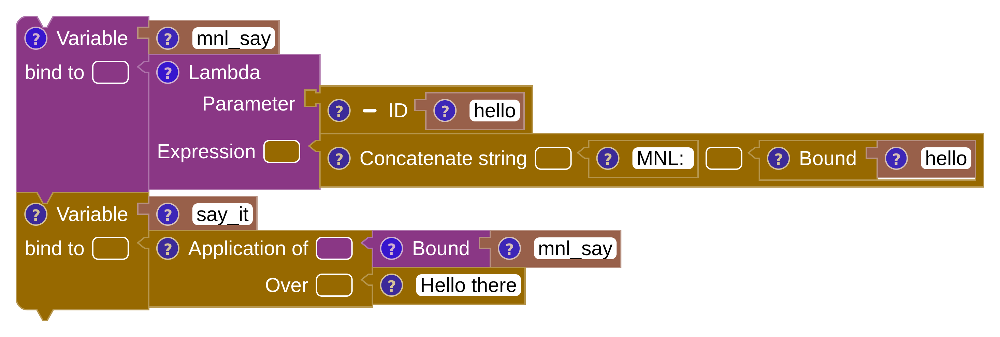
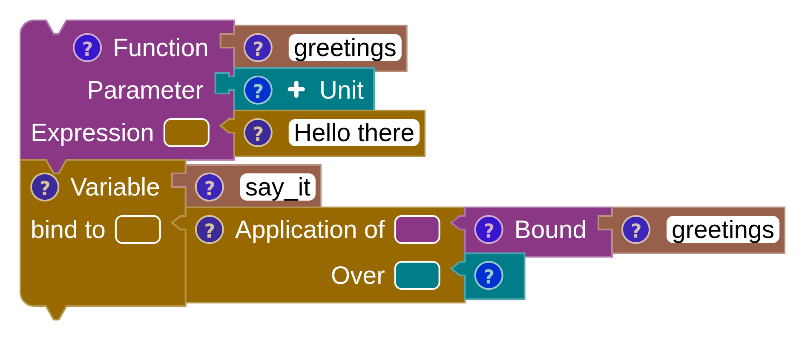
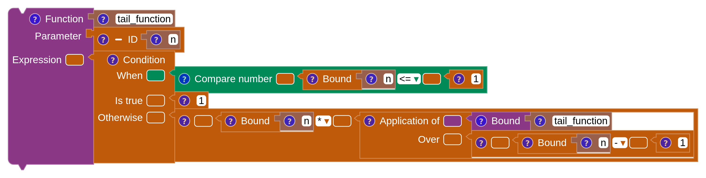
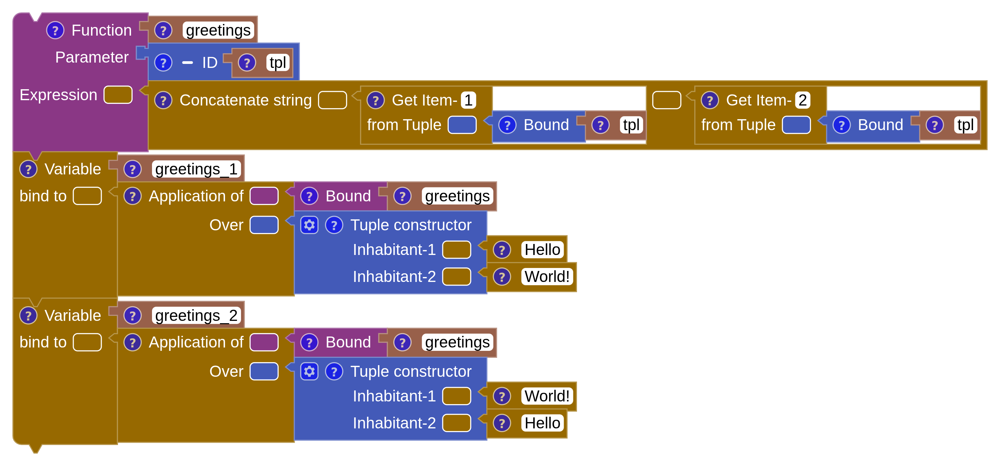
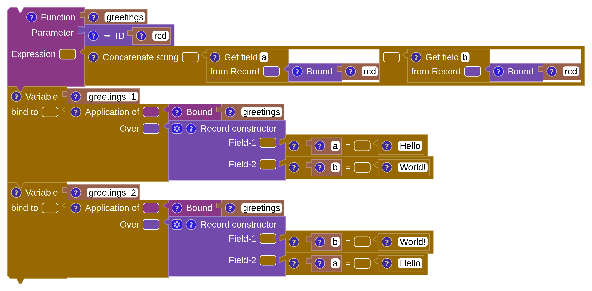
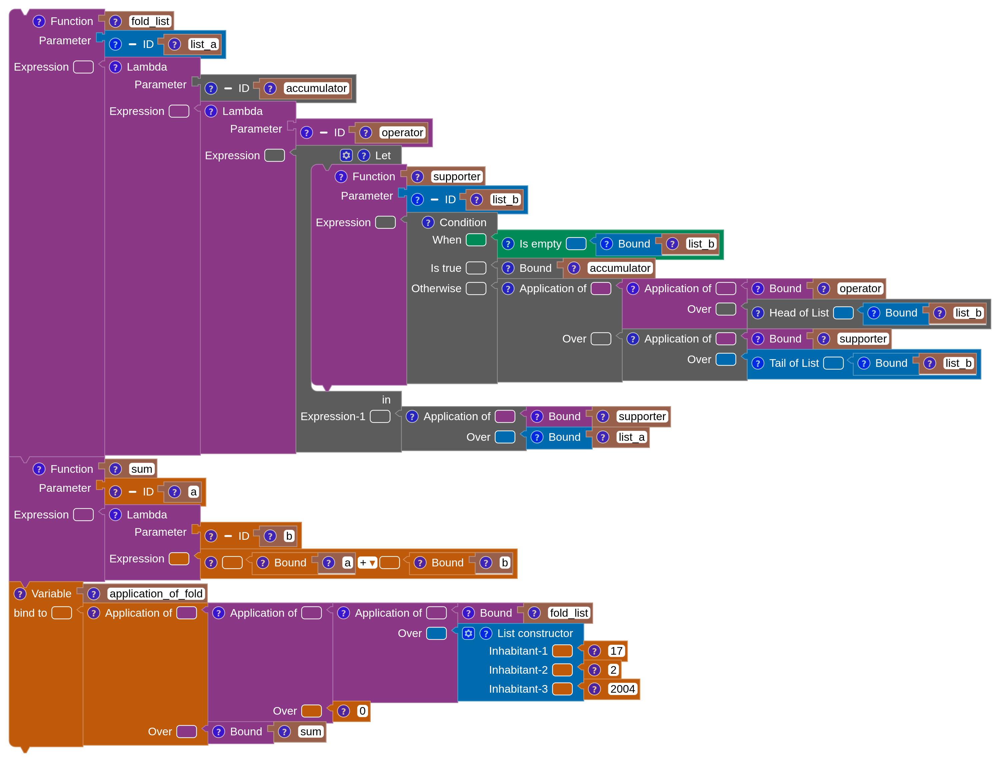
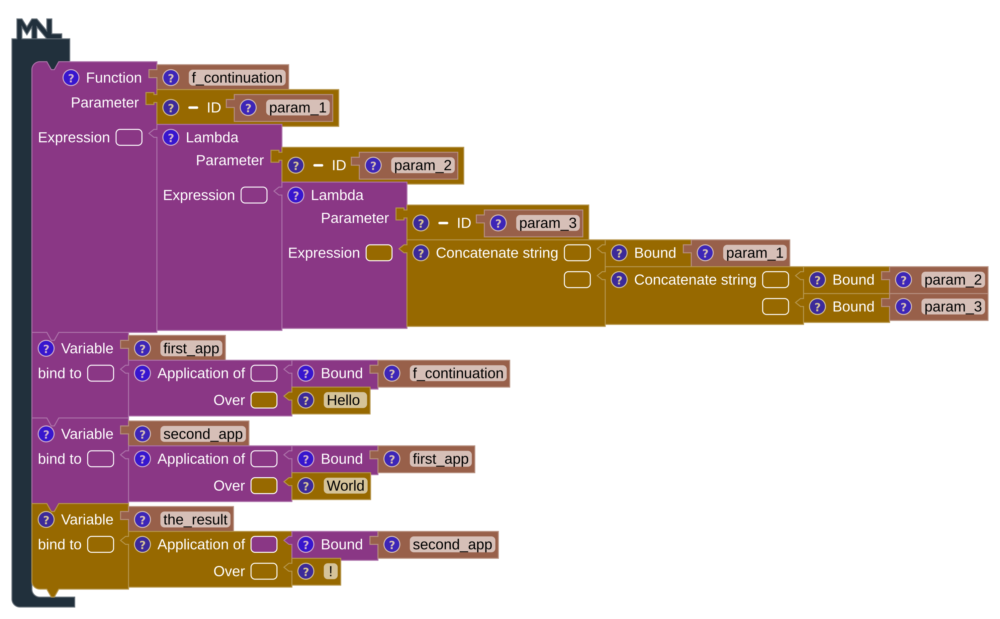

Functions
MnL treats a function as a first-class citizen: it can be bound to a name, passed as an argument, and returned from another function. There are two function blocks — the lambda block, which is an expression, and the function block, which is a declaration.
- Lambda is an expression block taking two inputs: a parameter and an expression.
- Function is a declaration block taking three: an identifier for the name, a parameter, and an expression.
The lambda block
A lambda is an anonymous function — one with no name. An empty lambda block starts with both inputs unfilled and a warning triangle showing what is still missing.



Naming a lambda is a matter of connecting it to a variable block:

mnl_say.SML
val mnl_say = fn (hello) => ("MNL: " ^ hello)
val say_it = mnl_say ("Hello there")Scala
val mnl_say = (hello : String) => ("MNL: " + hello)
val say_it = mnl_say ("Hello there")The function block
The function block folds that pairing — a variable bound to a lambda — into a single declaration.

SML
fun greetings () = "Hello there"
val say_it = greetings ()Scala
def greetings () : String = "Hello there"
val say_it = greetings ()Bound — using a name
Declaring a name is only half of it. To use a name — a parameter, a variable, another
function — you reach for the Bound block from the Expression category and type
the name into it. Every reference in the Factorial example, including the recursive call to
factorial itself, is a Bound block.
An Application block applies a function to an argument: the function goes in the Application of input and the argument in the Over input.
Recursion
A function may refer to itself by name, which is all recursion requires.

SML
fun tail_function (n) =
if (n <= 1) then 1 else (n * tail_function ((n - 1)))Scala
def tail_function (n : Float) : Float =
if (n <= 1) then 1 else (n * tail_function ((n - 1)))Recursion is where the visualization views earn their keep. Load the bundled Factorial example, switch to the Debug perspective, and step the CEK machine to watch the continuation stack grow and unwind.
Two or more parameters
MnL’s core is the lambda calculus, where a function takes exactly one parameter. To pass more than one value, group them — either into a tuple or into a record — and take that as the single parameter.
A tuple as the parameter

SML
(* SML does not support type inference for a tuple as a parameter.
Other ML languages may support the syntax below. *)Scala
/* the first item index is 0 in Scala */
def greetings (tpl : (String, String)) : String =
((tpl(0)) + (tpl(1)))
val greetings_1 = greetings (("Hello ", "World!"))
val greetings_2 = greetings (("World!", "Hello "))A record as the parameter
A record does the same job but names the parts, which reads better once there are more than two.

SML
(* SML does not support type inference for a record as a parameter.
Other ML languages may support the syntax below. *)Scala
/* Scala has no primitive Record type */The alternative is currying — a function returning a function, one parameter at a time. That is the subject of the next section.
Higher-order functions
A higher-order function takes a function as a parameter, returns a function as its result, or both.
A function as a parameter

fold_list takes the folding operator as a parameter.SML
fun fold_list (list_a) =
fn (accumulator) => fn (operator) =>
let
fun supporter (list_b) =
if null (list_b) then accumulator
else operator (hd (list_b)) (supporter (tl (list_b)))
in
supporter (list_a)
end
fun sum (a) = fn (b) => (a + b)
val application_of_fold = fold_list ([17, 2, 2004]) (0) (sum)Scala
/* Scala does not support a type variable on a lambda here */Returning a function
A function that returns a function lets you supply arguments one at a time — each application yields another function until the last one produces a value. This is partial application, and there is a bundled example of it under Examples › Basic.

SML
fun f_continuation (param_1) =
fn (param_2) => fn (param_3) => (param_1 ^ (param_2 ^ param_3))
val first_app = f_continuation ("Hello ")
val second_app = first_app ("World")
val the_result = second_app ("!")Scala
def f_continuation (param_1 : String) : (String) => (String) => String =
(param_2 : String) => (param_3 : String) => (param_1 + (param_2 + param_3))
val first_app = f_continuation ("Hello ")
val second_app = first_app ("World")
val the_result = second_app ("!")Right-click any Function block and choose Function value to render what the function actually is — the lambda it denotes, drawn as blocks. That is often the clearest way to understand a partially applied function. See function value.